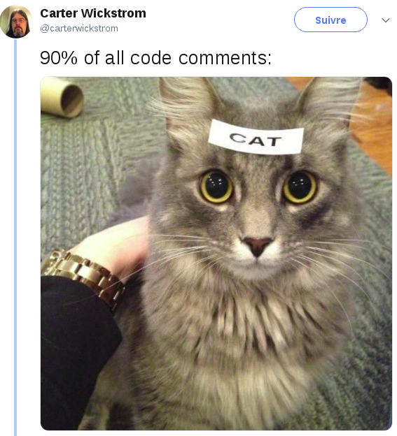

NOISE - Partie 2 - Communication.
Comment est-ce possible ?! Telle est votre réaction en ce moment alors que vous lisez ces mots que vous attendiez depuis si longtemps. Tous ces jours que vous avez passer à actualiser la page d’accueil de Laitues sont enfin récompensés.
Concevoir l’architecture d’un logiciel n’est pas toujours un exercice facile. Dans mon cas, NOISE est clairement le projet qui me pose le plus de problèmes. Je suis d’ailleurs certain qu’il va m’en poser encore beaucoup.

Je ne savais pas quoi mettre comme image, donc voilà.
Cela étant dit, je pense avoir maintenant une base solide pour avancer sans devoir recommencer tout de zéro une fois de plus. Dans cet article, je vais vous présenter un problème qui semble banal au début, mais qui a pourtant transformé complètement l’organisation du projet.
Cet article est très technique. Pour le comprendre, je vous conseille d’avoir lu le premier article de la série.
Le problème
L’un des premiers problèmes de conception que j’ai rencontré concernait la génération de l’audio. Comment organiser les modules audios du projet (ceux qui génère les signaux ou qui les modifient) ?
Après plusieurs recherches, j’ai vite compris qu’il s’agissait tout simplement d’un grand graphe : le graphe audio. Certains nœuds génèrent des signaux, d’autres en reçoivent et les transforment. J’écrirai un article sur le graphe audio de NOISE : ce concept mérite un article complet.
J’ai donc réalisé une implémentation basique de ce graphe audio, et cela fonctionné. Très vite, j’ai dû réfléchir à une façon le modifier durant l’execution du programme. En effet, jouer une note demande d’envoyer une information à un des nœuds, rajouter un instrument demande de rajouter un ou plusieurs nœuds et de créer des arcs entre ces derniers. La moindre petite action sur l’audio passe par le graphe audio.
Avec moult entrain (merci Quentin pour ce début de phrase), j’ai donc implémenté les fonctions dont j’avais besoin. J’ai fais un petit test et…
fatal error: concurrent map read and map write
J’avais oublié une chose pourtant capitale : le callback audio. Alors que le callback audio est appelé, l’ensemble du graphe audio va être traversé pour générer le son. Tout ça se passe en même temps que le reste du programme, c’est-à-dire par exemple l’interface graphique ou encore les événements MIDI (instruments physiques). Or, en général, quand vous essayez d’écrire et de lire en même temps quelque chose ça plante.
Pour rappel, un logiciel audio fonctionne généralement ainsi : le serveur audio du système d’exploitation (JACK, PulseAudio…) va demander périodiquement au logiciel de lui fournir des signaux audios à envoyer dans les hauts-parleur. Pour faire cela, le serveur audio va appeler le callback audio.
Mais pas de panique ! Heureusement pour moi, des programmeurs intelligents ont prévus des solutions. Les verrous ! Si on ajoute un verrou sur le graphe audio, il devient simple de résoudre le problème : il suffit de prendre le verrou au début du callback audio, puis de le rendre à la fin. En faisant la même chose sur chaque fonction qui souhaitent accéder au graphe audio, on s’assure que personne ne va modifier le graphe audio en même temps.
Plot twist !
Sauf qu’en fait ça ne fonctionne pas dans notre cas. Imaginez par exemple que 100 événements sont en attente d’être traités, et que ces 100 événements prennent tour à tour le verrou du graphe audio. Imaginez qu’à ce moment là, le système appelle le callback audio pour générer de l’audio, et que le thread audio ne parvienne pas à obtenir le verrou immédiatement à cause de ces 100 événements. C’est simple : le pire cauchemar des développeurs audio va se produire : un underrun ! Cela signifie simplement que le programme va prendre trop de temps pour générer l’audio, et que les hauts parleurs n’auront plus rien à envoyer. Vous vous en doutez, ce n’est pas ouf pour un logiciel audio.
J’en avais déjà parlé un peu dans le premier article, mais plus généralement il faut proscrire tous les appels systèmes dans le callback audio. Cela veut dire par exemple :
- Pas d’allocation mémoire
- Pas de verrous
- Pas de lecture ou d’écriture sur le disque
La raison est simple : on ne peut pas savoir à l’avance combien de temps ces appels vont prendre. Or, si le callback audio est bloqué trop longtemps, il n’y aura pas de son à donner aux haut-parleurs.
Oui, ce n’est pas rigolo de coder quand on est dans le callback audio.
Pour résumer, voici donc le problème : il faut trouver un moyen d’agir sur le graphe audio, sans ne jamais bloquer le callback audio.
Damned.
Je ne vous cache pas qu’à ce moment là je ne savais pas du tout comment résoudre ce problème. J’ai donc fais ce qu’aurait fait tout bon développeur : j’ai prié la déesse de la programmation. Mais elle n’avait pas de solution non plus, alors je suis allé sur internet.
Ne trouvant rien sur les forums, j’ai lu le code source de plusieurs de logiciels audios (Ardour, ZynAddSubFX, Luppp…) pour essayer de comprendre ce qu’ils faisaient (vive l’Open-Source). Je suis alors tombé plusieurs fois sur un concept qui m’a d’abord semblé complètement stupide.
Le callback audio… Mais pas que ?
Ce concept, choquant la première fois, gravite autour d’une queue. L’idée est de pousser les événements qui auront un impact sur le graphe audio dans cette queue, pour pouvoir les récupérer et les exécuter au tout début du callback audio.
Il me semblait pourtant que le callback audio devait aller très vite, et qu’il fallait donc limiter au maximum le travail qu’il devait réaliser. Et là, on lui ajoute toute la gestion des événements ? Ça ne faisait pas sens. Mais en y réfléchissant bien, c’est pourtant une bonne solution. En effet, faire quelques dizaines d’affectations mémoires ça ne coûte rien en comparaison d’appels systèmes. Et surtout, le temps que ces opérations vont prendre n’est pas inconnu.
Solution
En plus de cette solution que je vais détailler sous peu, j’ai découvert d’autres concepts moins répandu. Il est par exemple possible de rendre le graphe audio immutable. Il faut alors créer un nouveau graphe audio pour chaque modification. Le callback audio doit ensuite simplement accéder au dernier graphe audio via un pointeur qui peut être modifié atomiquement. Cette solution me plaisait bien, mais après plusieurs tests j’ai préféré la solution de la queue, et vous allez bientôt comprendre pourquoi.
Contre toutes attentes, alors que j’implémentais la solution de la queue, je me suis rendu compte que l’architecture générale de NOISE était devenue beaucoup plus claire. Je m’attendais pourtant à l’inverse. En ajoutant ce système de queue d’événements je pensais que modifier le graphe audio allait devenir complexe, et que le programme serait moins lisible et moins modulaire.
Pour pouvoir vous expliquer cet étonnant effet secondaire, je vais vous présenter l’implémentation de ce concept dans NOISE. Il faut tout d’abord bien comprendre que ce concept ne peut fonctionner qu’à une condition : l’implémentation de la queue ne doit pas utiliser d’appels systèmes. En effet, vu que la queue va être lue dans le callback audio, toutes les règles de ce dernier s’y applique. Ce n’est pas une évidence du tout, étant donné que cette queue est en fait une ressource partagée entre plusieurs threads du programme. Heureusement, il existe aujourd’hui des opérations spéciales dans les processeurs, les opérations CAS, qui permettent d’implémenter des queues sans verrous (lock-free queues). Je ne vais pas rentrer dans les détails, mais n’hésitez pas à aller vous renseigner sur l’Internet, c’est un domaine vraiment très intéressant.
Il fallait ensuite choisir ce que j’allais insérer dans cette queue : quelle structure de données ? Je voulais quelque chose de simple à utiliser, mais quelque chose d’assez puissant pour pouvoir interargir en toute liberté avec le graphe audio. Voilà ce que j’ai décidé d’utiliser :
type Event interface {
String() string
Apply(*Engine) error
}
Le principe est le suivant : la méthode String permet tout simplement d’identifier l’événement, et la méthode Apply permet de l’appliquer. Étonnamment simple non ? Quand j’ai commencé à développer NOISE, j’ai choisi le Go tout simplement parce que j’aime bien ce langage. Je pensais alors qu’il n’était en réalité pas vraiment adapté pour faire de l’audio, et que du C++ ou du Rust seraient de meilleurs choix. Et pourtant là, Go s’est avéré extrêmement adapté. En effet, en Go, toutes structures de données dont les méthodes répondent à une interface l’implémente implicitement. Il devient alors très simple de créer de nouveaux types d’événements, par exemple :
type ResetEvent struct {}
func (event *ResetEvent) String() string {
return "ResetEvent"
}
func (event *ResetEvent) Apply(engine *Engine) error {
return engine.Graph.Reset()
}
Cet événement remet tout simplement à zéro le graphe audio. Cela peut-être utile pour créer un nouveau projet par exemple.
La méthode Apply prenant en paramètre l’engine complète, il est possible d’agir sur n’importe quel module de NOISE, y compris bien sûr le graphe audio. Étant donné que les événements seront exécutés dans l’ordre au début du callback audio, je peux être certain que personne n’accédera au graphe à un autre moment. Voici en effet le nouveau callback audio de NOISE :
func (engine *Engine) processAudio(out [][]float32) {
engine.processEvents()
engine.Graph.processFrame(out[0], out[1])
}
Le callback audio étant le seul à consommer la queue, personne d’autre ne tentera jamais d’appliquer les événements au même moment. Il suffit de ne jamais interargir avec le graphe audio autrement que par les événements.
processEvents est tout aussi simple :
func (engine *Engine) processEvents() {
for engine.eventsQueue.Len() > 0 {
rawEvent, err := engine.eventsQueue.Get()
if err != nil {
log.WithError(err).Error("error reading an event")
}
event := rawEvent.(Event)
if err = event.Apply(engine); err != nil {
log.WithError(err).Error("error applying an event")
}
}
}
Avec ces quelques lignes de code, il devient possible d’agir sur le graphe audio sans se poser la moindre question. Il s’agit d’une solution beaucoup plus agréable selon moi qu’une solution basée sur des verrous ou sur une structure immutable.
En pratique
En pratique, il faut tout de même faire attention à une chose : la méthode Apply s’exécute dans le thread audio, donc toutes les règles dont nous parlions s’appliquent aussi ici. Imaginons par exemple que l’utilisateur souhaite charger un nouveau sample. Une implémentation possible de l’action serait la suivante :
- Charger le sample en mémoire
- Ajouter un nœud sur le graphe audio capable de lire le sample
- Connecter ce nœud au mixeur principal
- Connecter un séquenceur à ce nœud
Il est tentant de créer un nouvel événement pour faire tout ça, mais ce serait une erreur. Charger le sample en mémoire est en effet très coûteux : il faut lire le sample depuis le disque, et allouer de la mémoire. L’idéal est ici de d’abord charger le sample en mémoire en utilisant un autre thread (dans mon cas, une goroutine). Une fois le sample chargé, il est possible de créer trois événements : un événement InsertNode qui s’occupe de l’étape n°2, un événement ConnectNodes qui s’occupe de l’étape n°3 et enfin un second événement ConnectNode qui s’occupe de la dernière étape. L’idée est de mettre un minimum de logique dans les événements. Cela permet d’implémenter le reste en utilisant du Go idiomatique, vu qu’il n’y a alors plus de soucis de callback audio.
Ainsi, programmer les modules de NOISE qui ne sont pas directement liés à l’audio (l’interface graphique, les événements MIDI…) est faisable en Go idiomatique. Au début du projet, toute l’architecture du programme était impactée par le callback audio, avec cette solution ce n’est plus le cas.
Conclusion
Le titre de cet article était « communication ». Vous avez peut-être déjà compris la raison ? Le vrai problème que j’avais n’était en fait pas un problème de concurrence, mais de communication. Il fallait trouver un bon moyen de communiquer entre le graphe audio, le callback audio, les événements MIDI, l’interface graphique et toutes les autres composantes de NOISE.
Maintenant que j’ai une architecture de base claire, je vais pouvoir me concentrer sur les modules plus hauts niveaux de NOISE.
Les prochains articles seront probablement moins techniques que celui-ci. Si j’ai écris cet article, c’est en partie parce que j’aurais vraiment aimé en trouver un similaire alors que je cherchais une solution.
À bientôt pour un prochain article époustouflant ! \o/